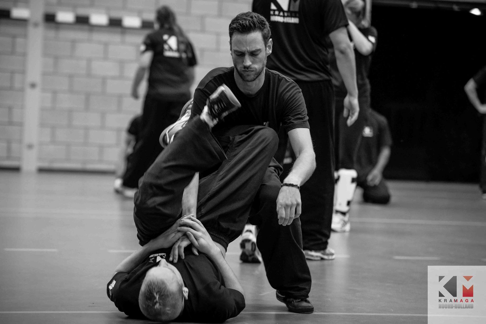

Wat is Krav Maga?
Krav Maga is ontstaan in Israël en heeft een unieke geschiedenis. Het werd in jaren 1930 en 1940 ontwikkeld door Imi Lichtenfeld, een bokser en worstelaar, die later de hoofdinstructeur werd van het Israëlische leger en de veiligheidsdiensten werd.
Wat Krav Maga onderscheidt van andere vechtsporten is het pragmatische karakter. Het is niet bedoeld voor competitie of sportieve prestaties; het is ontwikkeld om te worden toegepast in levensbedreigende situaties. Daarom zijn de technieken gebaseerd op instinctieve reacties en eenvoudige, effectieve bewegingen. Krav Maga leert je hoe je jezelf kunt verdedigen tegen verschillende aanvallen, zoals stoten, trappen, verwurgingen en mes aanvallen. In de loop van de jaren heeft Krav Maga internationale erkenning gekregen en wordt het wereldwijd onderwezen. Het is populair geworden onder zowel mannen als vrouwen die zichzelf willen beschermen in een gevaarlijke wereld. Of je nu een beginner bent of al enige jaren ervaring hebt, Krav Maga kan iedereen de vaardigheden en het zelfvertrouwen geven om zichzelf te verdedigen.
Dus, als je op zoek bent naar een praktische manier om jezelf te kunnen verdedigen en je zelfvertrouwen op te bouwen, dan is Krav Maga wellicht iets voor jou. Het is niet alleen een effectieve zelfverdedigingsmethode, maar het kan ook helpen om je fysieke conditie te verbeteren en je mentale veerkracht te vergroten. Ontdek de wereld van Krav Maga en bereid je voor om jezelf in elke situatie te verdedigen.
